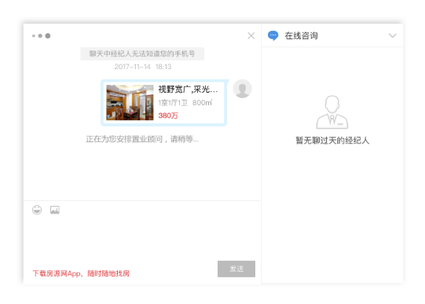

<header class="doc-im-background-color-primary">
  <div class="header-content">
    <div>
      <h1>WEB IM PLUGIN</h1>
      <h2>用于为系统内部网站提供及时聊天功能</h2>
    </div>
    <div class="header-starter">
      <a mat-button mat-raised-button class="doc-im-button-color" routerLink="/start">
        <span style="font-weight: 600;">快速上手</span>
      </a>
    </div>
  </div>
</header>
<section>
  <div>
    
  </div>
</section>

